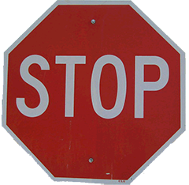
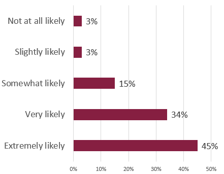

You can write the title for your instructions in one of two ways, according to Markel and Selber:
The textbook warns against titles that use noun strings because they are “awkward and difficult for readers to understand.” The textbook shares this example: “J112 Shock Absorber Installation Instructions” (p. 580). Read more about noun strings in Chapter 10 of Markel and Selber.
The most effective instructions titles tell the reader that the document’s purpose is to tell them how to do something and specifically state what task they will explain. Consider these examples and the related advice:
Check the Advice on Your Instructions Titles page for suggestions on how to improve the titles submitted in the Week 5 Check-in Survey.
Markel and Selber also explain how to use formatting in your word processor to make your title stand out from the rest of the document:
Because the title is the most important heading in a document, it should be displayed clearly and prominently. On a cover page or a title page, use boldface type in a large size, such as 18 or 24 points. If the title also appears at the top of the first page, make it slightly larger than the rest of the text — perhaps 16 or 18 points for a document printed in 12 point — but smaller than it is on the cover or title page. Many designers center titles on the page between the right and left margins. (p. 275)
To explain in more qualitative terms, the title should be the first and most obvious thing that the reader sees when they look at your document. It should stand out so that the reader knows immediately it is the title.
Remember to begin the words in your titles with capital letters. Only smaller words should be lowercase (unless they are the very first word of the title).
Correct: Using an Air Fryer
Revise: How to use a coffee maker
See the APA Style information on “Title Case Capitalization” for more advice on capitalizing your titles.
 Verbs in the imperative mood are command words that tell someone to do something. The message on a stop sign is a perfect example of a verb in the imperative mood. It tells the driver to stop.
The steps in instructions all begin with a verb in the imperative mood, usually as the first or second word. Here are some examples, with the imperative verb marked in italics:
For the record, there are plenty of lines from “Enter Sandman” that are not imperatives, but those three are examples you can probably remember. As you work on your instructions, phrase your steps as if you were telling someone to do something.
Safety warnings are included in the introduction section of your Instructions and are typically mentioned again in the steps where they are relevant. The “Planning for Safety” section of Chapter 20 outlines how to write safety measures into your instructions.
To step up your safety advice, add icons to your instructions (like the one on the right) that increase the visibility of your warnings and cautions.
You can use tools built into Microsoft Word to easily add royalty-free images to your work.
In Google Docs, you can use emoji for your warning symbols, or choose Insert » Image » Search the Web to find a suitable icon.
Three Full Drafts are due before Spring Break:
In the Week 5 Check-In, I asked how likely you are to submit all three before Spring Break. Here’s what you said:

I am experimenting with badges this term to see if they would be useful to add to the course in the future. My goal is to use them as little extra incentives for strong professional behavior.
They will not change your course grade necessarily, but you can use them in your optional Final Exam to argue that you have worked diligently.
You can earn the On-Time Project Performance I, Spring 2023 badge by submitting all three of the Full Drafts that are due before Spring Break by 11:59 PM on Friday, March 3. Once you submit your work, Claim the On-Time Performance I Badge by completing the linked activity. You can only open the quiz to if you have submitted all three of the projects.
Learn more about Canvas Badges and Credentials by visiting these help pages: